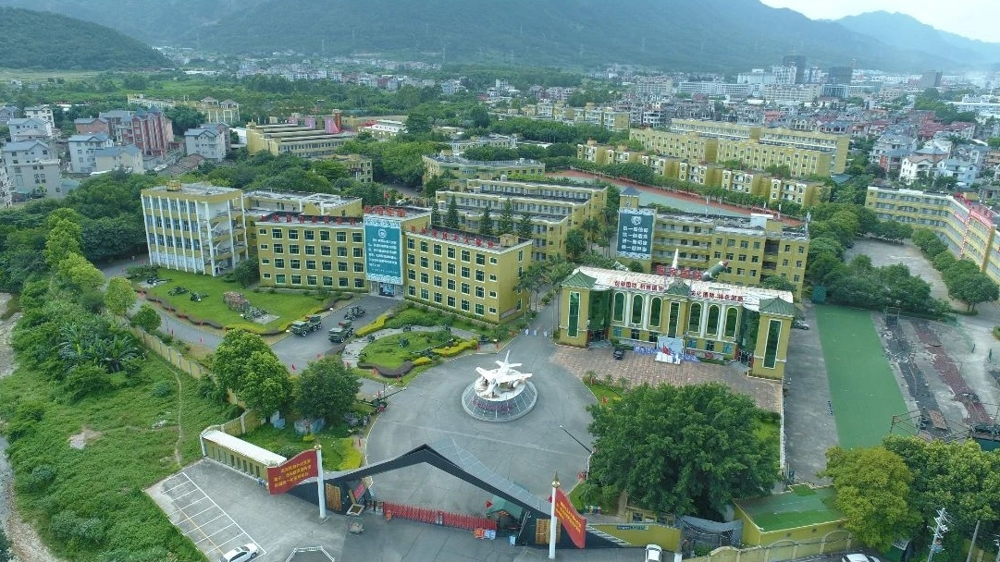

2024年11月19号至23号，全体初一、高一学生到福建龙翔国防教育基地进行了为期5天的社会实践。这也是9班首次社会实践。
概况
与其说是社会实践，倒不如称其为地地道道的军训。本次军训以训练为主，游戏为辅，实践部分极少。（所以以下称这次社会实践为“军训”）
福建龙翔国防教育基地，简称龙翔，坐落于福清市镜洋镇，较为偏僻。
军训基本信息
时间：2024年11月19号至23号（5天）
地点：福建龙翔国防教育基地
人物：福州第四十中学初一、高一学生
费用：515元/人
在龙翔的五天中，前三天都有下雨，第四天是阴天，第五天转晴。气温比较舒适。
有传闻说龙翔的环境很差，比如“床单上有尿渍”、“饭里有头发丝”等。还有一说，就是：
龙翔没有龙，只有翔。
那真实的龙翔是怎样的？让我们走进这五天的生活。
军训前
段长告知了此次军训的须知。其中说到，是否允许带零食由各班班主任决定。刘老师允许大家带少量零食，但绝不能当正餐。
需携带的物品清单和须知非常详细，刘老师还发了pdf文件。内容大致如下。
所有个人物品要做好标记，并写上班级和姓名；允许带少量现金，但不能带贵重物品。
需要带水桶、背包和行李箱。水桶放置生活和清洁用品：
- 6-8个衣架
- 2个几个晾衣夹
- 干净毛巾若干
- 洗漱用品（牙杯、牙膏、牙刷，塑料袋包好）
- 洗发水、沐浴乳
- 洗衣皂（塑料袋包好）
- 洗澡用的拖鞋（塑料袋包好）
- 1-2双适合训练的运动鞋（含1双白鞋）
- 1-2卷垃圾袋
背包放置学习与防护用品：
- 2条红领巾
- 水杯（非玻璃杯）
- 雨伞
- 4-5个口罩（塑料袋包好）
- 笔记本、笔
- 爱看的书（非小说漫画等）
- 朗诵稿、歌词各3份
- 卷纸/抽纸/手帕纸/湿巾
- 风油精/花露水、防晒霜
- 个人药品（如晕车药）
- （女生带）梳子、女生用品
行李箱放置衣物：
- 日常外穿衣物
- 朗诵穿的服装
- 内穿衣物
- 可选：台灯/手电筒/枕头/睡袋/大塑料袋（装穿完的脏衣服）等
- 特殊：张雨希、林奕扬带朗诵服装；孔祥懿带横幅
周二早上，7:15，大家带着行李走进了四十中，操场上热闹非凡。随后，各个老师带领本班队伍离开操场，走上了大巴；有一些人去了拼车。
走上南台大道，在福州南连接线高速上行驶；跨过闽江，越过五虎山隧道；出高速，来到镜洋互通，周围是县城的景观：店铺、工厂、电动车、居民楼……看着一栋栋楼房被甩在后面，突然，大巴右转，楼房变得稀疏，景致更亲近自然。车流不多，大巴很快驶进右侧的岔路。这条岔路看上去宽阔，丝带一般，一眼能望到底。跨过一条小溪，道路尽头逐渐清晰，军旅生活的气味扑面而来。
下车后一片混乱，大家都忙着找自己的行李（尽管刘老师一再说先随便找一个行李，待会儿再认领）。
这里说个题外话。杨依诺其实带了手机，由于藏得挺严实没被发现。反倒是他爸爸向刘老师“揭发”了她，这才被刘老师知道。[2]
入口


龙翔入口
作为“国防教育基地”，入口必须有创意。龙翔的入口以隐形战斗机为设计灵感，左右两侧是写着标语的旗帜。
来到龙翔的大巴车停在大门右侧的空地上。下车之后就会发现教官已经等候已久。
大门后面就是龙翔的“门面”——一架战斗机。龙翔的一大特点是园区内保存着各种退役装备，大炮、坦克、战斗机，一应俱全。上面都印有“中国人民解放军海军（空军/陆军）赠”。在很多地方都能看到这些东西，例如食堂出口的草坪上有坦克、航空航天馆外的大草坪有战斗机、龙翔入口左侧有大炮。
其实大路旁还有一个看上去荒废的公交站，名为“龙翔站”，广告牌上还写着“期待您下次光临”。
辅导员等候已久。踏入龙翔大门，5天的军旅生活正式开始。
辅导员
话说龙翔的教官不叫“教官”，而是叫“辅导员”。在龙翔，“辅导员”是官方的称呼；如果叫“教官”大概是没用的。但耐不住很多人还是叫“教官”，于是这两种称呼在龙翔同时存在。
辅导员穿迷彩服、戴帽子，很容易辨识。
龙翔有专门为辅导员准备的喇叭，辅导员可随时取用。每天叫宿舍里的人起床、集合或者在大厅里“发号施令”都离不开它。其中有一个喇叭上面还贴了很多搞笑的贴纸。
同学们到宿舍放置行李。在楼下台阶旁的空地上，我们看到了9班的辅导员。在后面的活动中，同学们对他产生了以下认知和了解：
- 因为他嘴巴突出，被学生称为“鸭嘴兽”。
- 他的名字叫“王文浩”，但具体哪个wén、哪个hào不知道（下面统一称为“王文浩”）。当然也有人说他叫“王浩文”。一次其他辅导员还拿他的名字玩梗，说“文浩浩文！”
- 拉练时，他说他在新疆当过兵，后来退役来到龙翔；但后来又变成“当武警”和“当警察”。
语言
辅导员各有各的口音。举个例子，喊“一二一”时，有一个辅导员是这么读的：
一儿一
因此那个班的学生喊口号时故意将“一二一”喊成“一儿一”。
另一个辅导员则读成这样：
亚二一
这还影响到过9班辅导员。一次同学们走在吃饭的路上，听那个辅导员喊“亚二一”，不久他也喊成了“亚二一”。
还有一种通用口音，那就是喊“立定”时，辅导员会刻意加重其语气，喊成：
列——丁！
龙翔的辅导员还喜欢喊某个方阵的名字，例如“四十中”、“初中部”、“高中部”、“×班”。被叫到的集体需要喊“到！”回应，就比如下楼集合时，会出现以下情景：
辅导员：“四十中？”
学生：“到！”
辅导员：“四十中？”
学生：“到！”
辅导员：“高中部？”
学生：“到！”
辅导员：“高中部？”
学生：“到！”
辅导员：“高中部一、二、三楼，下楼集合！”
……
辅导员：“初中部？”
学生：“到！”
辅导员：“初中部？”
学生：“到！”
辅导员：“一、二、三楼，下楼集合！”
（集合完毕后）
辅导员：“一班？”
学生：“到！”
辅导员：“二班？”
学生：“到！”
辅导员：“三班？”
学生：“到！”
……
辅导员：“感恩的心？”
学生：“到！”
辅导员：“队列方阵？”
学生：“到！”
这样的情景，每天要重复很多次。
到了军训的第二天，陈睿卓、唐家祺、郑锦熠三人就发明了“新玩法”——别人喊“到”，我就喊：
操！
于是越来越多人开始喊“操！”，甚至推广到了别班。而后同学们的应答虽然是“操”，但辅导员却以为是“到”，这事也不了了之。
辅导员的语录数不胜数。如：
吵什么呢！
齐步——回去。
调整军姿！
军姿十分钟，开始！
后面几个更为经典，军训结束后多次被模仿。比如跺脚时，9班辅导员经常这么说：
小碎步跺响！
1秒钟跺50下！
早上6点，楼下就会有人喊：
四十中，起——床——
声音在龙翔上空回荡许久，难以忘怀。后来学生常常在下课后喊这一句话。
行为
辅导员并非完全平等。在众多辅导员中，有一个总辅导员管理所有辅导员。因此龙翔会出现“辅导员大骂辅导员”的“奇观”。
论压榨学生，辅导员绝对是专业的。他们喜欢用“钓鱼”战术控制学生。相信大家在龙翔不止一次听过这几句话：
如果今天练得好，明天就全都是玩；如果练得不好，就全都是训练。
明天（或下午）训练的时间取决于你们现在的态度。
这一遍练得好就休息，练不好就一直练。
最后一遍练完就休息。
事实上，哪怕同学们练得再好，也鲜有玩的时间。
练得好了，辅导员就会“挑刺”，指出方阵中的部分学生表现差，并让玩的时间泡汤。
刺也没的挑了，就这么做：
第四晚出来集合。辅导员说宣誓完就回宿舍，结果宣誓了两遍后又冒出个唱国歌环节；本来说“唱得好就提前解散”，等到唱得好了，又开始练队列/感恩的心，回宿舍的最早时间也自然被推到九点半。
所以千万不要相信辅导员口中的“这一遍”。正确的做法是做好练第二遍、第三遍或练其他项目的准备。
在如此压榨下，5天的社会实践变成军训是必然的。毕竟作为“国防教育基地”，本来就和“实践”关系不大。但是五天内，似乎“国防”也没体现多少，因为在龙翔的活动以训练为主。
训练
训练，是“闭营仪式排练”和“队列动作训练”的统称。
军训以“班”为单位展开。即所有行动必须跟随本班；如要离开班级，必须进行报备。
队伍共有四列，从矮到高排。训练和集合时都按照这个队形站。
队列动作的训练在第一天就开始了，主要有如下项目：
- 稍息立正、跨立立正
- 停止间转法
- 敬礼与礼毕（含半面向左/右转）
- 齐步走的行进与停止（“停止”后改为“立定”）
辅导员命令如下：
第一项科目：稍息立正、跨立立正。都有，稍息！
立正！
稍息！
立正！
跨立！
立正！
跨立！
立正！
第二项科目：停止间转法。都有，向——右——转！
向——右——转！
向——左——转！
向——左——转！
向——后——转！
向——后——转！
第三项科目：敬礼与礼毕。都有，半面向左——转！
敬礼！
礼毕！
敬礼！
礼毕！
半面向右——转！
第四项科目：齐步走的行进与立定。都有，向——后——转！
齐步——走！一二一，一二，立定！
向——后——转！
向前，对正！放！
齐步——走！一二一，一二，立定！
向前，对正！放！
此外还有站军姿、向前对正和原地踏步走。
站军姿是最频繁的项目，王文浩动不动就会让大家“军姿十分钟”，起初有一个人动就多站一分钟，后来一个人动直接加五到十分钟。当然这只是噱头，实际不会站这么久。
军姿的要求也很经典：
- 脚跟并拢、脚尖分开约60度
- 收腹挺胸、身体前倾
- 双手紧贴裤子、中指贴于裤缝
辅导员要求齐步走时不要那么直，就跟日常走路一样。王文浩要求，喊“齐步——”时需身体前倾，否则就回去重来。于是有：
齐步——回去。
在日常齐步走时就没有这么严格的要求，但会出现一个环节：王文浩会时不时喊“一二一”，学生需喊“左右左”，对应着左脚和右脚；还有别的口令，像这样：
辅导员：一，二，三，四！
学生：一二三——四！
辅导员：一二三——四！
学生：一二三——四！
或者是：
辅导员：一二，三四！
学生：一二，三四！
初到龙翔时辅导员就要求：凡是齐步走时经过老师，就要有一个带头的学生喊“老师好”，然后方阵中的学生跟着喊“老师好”；经过辅导员时则喊“辅导员好”。
王文浩喜欢在①号多功能大厅外的棚子那里进行训练，这也是9班饭后集合的位置。
当然，龙翔的特色还得是声音。
凡是要动脚的动作（齐步走除外）跺脚声必须响亮、有气势——这也是评价学生表现的重要指标之一。
最能体现该要求的动作是向前对正，跺不响就一直跺。王文浩曾说过，大家只需要使劲跺就行，地板坏了他会赔。
另外，礼毕时要有拍裤子的声音、齐步走时要有划过衣服的声音。
到了第三天，训练的项目出现了“分化”。为了圆满地举行闭营仪式，大家分成了四个方阵进行训练：
- 队列
这是初中部的两大方阵之一，也是9班所在的方阵。该方阵的展示内容就是队列动作的训练内容，即稍息立正与跨立立正、停止间转法、敬礼与礼毕、齐步走的行进与立定。
- 感恩的心
这是初中部的另一方阵，表演内容为《感恩的心》手语操。
- 国家
这是高中部的方阵之一，展示《国家》手语操。
- 炮排
这个方阵主要是在闭营仪式时放炮，增添氛围感，同时也是唯一一个配有道具的方阵。
有没有发现上面没有提到跑步？其实在龙翔几乎没有跑步这一项目。唯一的一次，高中的学生因为站不好而被罚跑了一两圈。
食堂
饭前
长时间的训练，吃饭是补充体力的重要环节。但想要进入食堂，必须从一条路走——因此每到饭点、这里必然拥堵。
之所以如此，是因为辅导员有一个习惯，走一段就得停一段，然后向前对正——哪怕前面很长一段路没人。
中午或晚上到食堂，入口都会摆放着几箱水果。到这里时，两列学生需向前走，一人拿一个水果；然后另外两列跟上去拿。拿完后，需到门口的水池洗手，学生往往只是淋一两秒就走。
每餐的水果是随机的，但总共就三种：橙子、橘子、苹果。许多人不大爱吃，他们的水果就会出现在其他学生或辅导员手上。
终于可以进入食堂了。龙翔的食堂很大，进入后左侧是打饭窗口。打饭窗口很多，窗口前的地上贴着一米线，排队时需保持距离。还有两个打汤窗口，打汤是可选的。
右侧是餐桌。龙翔的桌面是塑料的圆桌，一桌坐八人。辅导员要求一桌只能坐同一个班的学生，导致打完饭后时常发现前排的桌子被别班占领，只能端着餐盘走来走去，寻找座位，不大容易。
另外，龙翔有两个食堂，分别是“一号食堂”和“二号食堂”，学生都在二号食堂吃饭。二号食堂的出口前面就是一号食堂。大家除了在里面训练过一次外就没有再进去。而在一号食堂训练的期间，辅导员甚至踩在桌子上指挥训练，可见这个食堂已经不承担用餐的功能了。
饭菜
饭菜的味道一言难尽。第一天午饭时，同学们都说米饭很黏，不好吃；第三天早饭时，同学们推测豆浆是用粉跑的，因为从汤桶最底下打的豆浆没有豆渣。
这里的一些菜表面都裹了一层粘稠的汤汁；而午餐和晚餐时，会有一块饼，荤的素的都有可能。
辅导员说可以加菜，但像鸡腿这样一人只能有一个的菜不能加，当然也几乎没人主动加菜。
不像传言中的那样只有“馒头配萝卜干”，龙翔的早餐花样还是挺丰富的，一个鸡蛋是标配，另外还有两道小菜，主食则是馒头、包子等，尤其有一天早餐的三角糕味道很不错。因此，一些人说早餐是三餐内最好吃的了。
但另外两餐就不一样了。每次你去外面，就会看到部分装剩饭剩菜的桶已经满出来了，还堆出了一座小山。这种现象最早体现在第二天的晚餐中，一些人表示那顿饭是最难吃的。还有一些人说，当时看到这一幕时差点吐出来。
饭后
说到这里就不得不提一下龙翔对剩饭剩菜的处理要求。
龙翔的洗碗机大概是自动的，但特别脆弱。在讲用餐要求时，辅导员告诉大家，哪怕是一个饭粒也可能导致洗碗机被卡住。因此餐盘的善后处理至关重要。
- 倒剩菜
食堂出口和入口分开，出口摆着很多蓝色塑料桶，学生的剩菜都倒在这里，这能解决大部分剩菜。
- 洗餐具
龙翔的餐具包括金属餐盘和金属勺子（没有筷子），倒完剩菜后会出现食物残渣黏在餐具上的情况。这时需走向旁边的水池进行简单清洗。清洗的目的是冲掉残渣，盘子上的油渍则无需关心。
- 放餐具
不远处就有蓝色箱子和金属盆。学生需将餐盘整齐地码放在箱子里、勺子扔进盆中。
处理完毕，就要到指定位置集合。在所有学生到齐前允许进行装水、上厕所，到齐后就要开始接下来的活动。
场所

这就是龙翔的俯视图[1]。右下角即为入口，入口右侧空地就是停车的地方。
操场
观察发现，龙翔有两个操场。小的就叫“操场”，大的则是“大操场”。为了区分，下文将小的那个操场称为“小操场”。
开营仪式、闭营仪式都在小操场举行。这个操场和学校的操场配置差不多，但旗杆是在篮球场靠近主席台一侧跑道的。还有一点令人无语：闭营仪式前，辅导员让大家先在操场坐一会儿，结果有人发现坐了一会儿裤子、鞋子被染绿了，就说“操场会掉色！”
在消防演练时，学生首次到达大操场，当然也只去过这一次。去“大操场”的路上要上一段坡。到达后，只见一片水泥地板，有的还是开裂的；跑道淡到基本看不见，跑道上面还停着各种各样的车辆。也就是说，大操场其实等同于停车场！
多功能大厅
龙翔有两个大厅，分别为“①号多功能大厅”与“②号多功能大厅”,两个大厅位于同一个建筑中（图中靠近小操场的白色长条就是多功能大厅）。其中，“②号多功能大厅”里摆放着射击的相关道具，“①号多功能大厅”位于一号食堂前，是同学们常去的地方，用来进行文艺汇演、朗诵比赛等。两个大厅都有舞台，但②号多功能大厅的地板是人造的草皮；①号多功能大厅装修就精致很多，舞台上还有落地的屏幕以及聚光灯，配备了塑料椅。
其他
我们再认识一下龙翔的其他场所，这些场所在其他模块会一一介绍。
多功能大厅左侧深灰色和浅灰色的楼分别为一号食堂和二号食堂；小操场上方四栋楼为宿舍楼，宿舍楼旁深蓝的东西就是小卖部。
显然，从入口进入，一直直行就能到小操场、食堂、宿舍等地方，但大家从没从这条路走过。辅导员都会带大家从入口左侧的路去这些地方。
那条去食堂的固定路线大概是这样的：从宿舍楼出发，走到多功能大厅右侧的道路，转弯到达旁边有五栋楼的那条路，再右拐，从那棵大的树旁进入食堂。
项目
辅导员声称“龙翔有60多个项目”。在军训期间，大家也看到不少场馆，例如海军船舰馆、航天航空馆。
辅导员“明确”了在龙翔的制度：五天内的活动分为训练和玩，两者相互穿插，玩的时间由训练的表现决定。练不好就别玩，练得好甚至可以整天都在玩。辅导员还说，进入场馆是需要门票的，门票在辅导员那里，视情况发放。
讽刺的是，9班一个场馆都没去过，更没见过龙翔的什么“门票”。5天内，9班只体验了这些：
射击
龙翔有真正的射击项目，甚至有真人CS的场地。但同学们只能玩低级的射击——枪是看得见摸得着的，但射击的目标是电脑屏幕上显示的。游戏界面为10个瓶子和一个移动的屏风。有10次射击机会，目标是尽可能击碎更多瓶子。
设备就几台，所以学生要排队体验，排队的人就坐一个塑料板凳。
很多人实操后发现弹道偏左，甚至还有连发的现象。
VR
实际上VR、射击、穿越火线都在一号食堂楼上，只不过用一面墙把射击和另外两项的场地隔开了。第二天晚上，辅导员让没体验的班级去体验VR，到达后照样坐着塑料凳排队体验。
龙翔有两台设备，一台可同时供4人体验。9班到达时，两台是分别给两个班级体验的——因此一次体验的人数固定为4人。
VR的场景有三款，都是“过山车”场景。王文浩让大家转过去不要看，防止大家看到画面失去新鲜感，但还是阻止不了同学们偷看。
体验完后，9班来到②号多功能大厅。此时没有体验的班级正在跟“总辅导员”互动，9班参与了“猜口袋里有没有东西”、“每班请人表演《金龙拍拍操》”两个主要环节。
穿越火线
听着挺高大上，实际上是科技馆里的常客。因此学生对这个项目的体验感不高。
游戏
多功能大厅门口的空地是第二天上午的游戏场地之一。学生在这里体验了两个项目，但性质和“穿越火线”一样。
观影活动
军训前上映了一部《志愿军：存亡之战》，于是第一天晚上，全体学生就到①号多功能大厅观看了前作《志愿军：雄兵出击》。但看了一半就因为时间太晚而被暂停了，辅导员让大家“有兴趣回家看”。
消防演练
第二天早上集合后，辅导员通知事项，然后大家就回到宿舍准备消防演练。警报声响起，学生用毛巾捂脸撤离宿舍。
龙翔为此贴心地准备了烟雾（烟雾还很熏人），氛围感十足；当然学生是有在说笑的。撤离到楼下，立刻有辅导员让大家就近蹲下，撤离得差不多了就找到本班队伍排队，准备到大操场进行灭火器实操。
然后的安排使学生对龙翔的印象更差了。所有班级的方阵围成一圈，前面摆着个铁桶，里面有燃烧的木柴。然后让每个班派一位代表体验灭火器，其他人就只能看着。于是学生第一次开始集体吐槽龙翔：
有120个项目！
我都不知道龙翔怎么赚钱！
玩得太开心了！
饭菜健康又美味。
两天就把120个项目都玩完了！
另外还有文艺汇演、徒步拉练、班班有朗诵等，就不一一介绍。
我们再看一看四十中官网。官网记录了不仅写了初一、高一在龙翔的见闻，还有初二、高二在幸福庄园的活动。在初二、高二的活动介绍中，详细讲解了茶艺、农耕、香道、葱饼与豆浆制作、证券知识讲座、电工与木工实践、法政馆参观等项目。再看看对龙翔项目的介绍：
研学期间，基地组织的消防演练、徒步拉练、真人CS活动、军事射击、观影等联欢活动丰富了学生的体验，给学生们留下了美好的回忆。
这一段非常简略地概括了学生在龙翔的趣味活动，说明真的没什么可写的。这下你应该知道为什么不说这五天是“社会实践”了吧。
住宿
一个基地的好坏，绝不是其荣誉的数量、项目的多少，而是在于它最根本的细节——住宿条件。
分布
要到达宿舍，首先得下几阶台阶（宿舍楼的地面是设计成下沉的）。下台阶后左右各两栋宿舍楼。
学生住在下图的四栋楼中，其中：初一男生住振兴楼、女生住尚武楼；高一男生住崇军楼、女生住自强楼。
左边的楼有6层、右边有5层。每层楼有两个楼梯口、两侧各有一个厕所、厕所门口有若干水池，走廊有防盗网和晾衣杆。
女生的宿舍楼白天有男辅导员，晚上是女辅导员。
龙翔的厕所环境居然比四十中还好，每个隔间都可以正常锁上，且高度足够，看上去干净整洁。厕所外面是多个水池，这也是学生洗漱的地方。
宿舍也这么好吗？我们先看配置。
一间宿舍有两扇窗，其中一扇是连接走廊的，这扇窗旁有晾衣架；空调、风扇齐全；左右各3个上下铺，共计12张床。
辅导员曾经说：“不要再床上吃零食，不然会招惹小动物……”当然这种现象较为罕见，没有人公开反应宿舍有“小动物”。
床
初到龙翔时是没有床单、枕套和被套的，只有被芯和枕芯，需要在开营仪式后到一楼统一领取。它们合称“三件套”。
传言中的床单尿渍不知真假。从外表上看，三件套是经典的军旅绿色，表面相对干净；但凑近看就发现不对劲了，举个例子：枕套使用魔术贴封口的，而魔术贴的表面看上去自然不咋地。
到龙翔的第一天，辅导员带大家了解了内务相关要求，随后到台阶旁空地教学被子的叠法。龙翔的被子也因为其叠法的特色而被称为“三折被”。后来在四十中，就有一些人用眼镜布、餐巾纸等物品叠出迷你三折被，可见其非常经典。
当时的场景是这样的：地上铺一草席，辅导员脱鞋站在草席上，一遍遍地向不同批次的学生讲解三折被叠法。周围学生围成一圈，水泄不通，不时传来起哄的声音。值得注意的是，有人发现被芯有黑点，大喊“发霉了！”然后就被辅导员“制裁”了。
话说龙翔已经玩转了“自动化”。除了动不动卡住的洗碗机，龙翔的洗涤房间更是像极小工厂的流水线。闭营仪式后，辅导员让大家拆下三件套，随后带领大家来到多功能大厅旁一个不起眼的房间，里面摆着几个比人还高的洗衣机，透过圆形玻璃可以看到很多正在清洗的三件套。洗衣机运行的声音很大，走近时还能感觉到热气。洗衣机旁是小山一般的三件套，有的放在三轮车上，有的干脆堆地上。同学们就把自己的三件套扔在这几堆上面，扔完就可以走了。
床是用铁架支撑的，因此稍微动一下就会吱吱作响。
内务
领完三件套，回宿舍后就开始龙翔的第一个项目——内务整理。
龙翔对内务要求严格。床单无褶皱是基本要求，对物品的摆放位置也有一番规定：叠好的三折被需居中置于床头（定义朝门的一侧为床尾），枕头平放于上方。
书包也放床上。但不同辅导员对放置的位置产生了分歧。一个辅导员说放床尾靠墙的一侧，王文浩却要求放中间。
辅导员不要求被子跟军队里叠的“豆腐块”那样棱角分明，但至少得有个大概。学生忙活半天，到时间后辅导员一间间检查。自然每间能合格的就那么一两个，其他人就挨批去。每次午晚休后辅导员都会进行例行的巡视，要求也没那么严苛。
水桶统一摆放在左侧床底，行李放右侧床底，且需要摆成“一条线”，也就是要对齐。
鞋子统一摆在走廊靠宿舍一侧，拖鞋和宿舍外穿的鞋都一样——也是摆成一条线；门口有垃圾桶，每次下楼集合，指定的宿舍长需倒垃圾，同时挨着厕所的宿舍得把厕所灯关了。
上面这些就是内务的基本要求。大多数时候检查不合格也就是私下批评教育；但有一次发生了戏剧性的一幕：
第三天，学生在①号多功能大厅进行队列、感恩的心训练。辅导员忽然让大家转过去坐下，要给大家一个“惊喜”。
接下来就是史诗级的一幕——只见宿舍的照片被投放到大屏幕上，并有标注是哪栋楼的哪间宿舍，引起一片惊呼，不少人说自己的宿舍肯定不合格。
照片不仅有宿舍内的，还有走廊的鞋子。辅导员开始一一询问照片中宿舍的宿舍长以及未按要求放置的物品是谁的，问完之后切换下一张。相关人员被罚到台上站着；不够站了干脆直接站到方阵里。途中有一个台上的人找地方坐下了，还挨了批评。
澡堂
龙翔的澡堂为公共浴室，直接降低了洗澡时的舒适性和隐私性。
还有一点很糟糕，就是澡堂离宿舍很远，大概在食堂后面。每次洗澡需要走相当远的一段路。
洗澡是自愿的，辅导员会不停用喇叭喊“要洗澡的同学，带上雨伞和工具，到楼下集合……”到楼下后需排成两列，由辅导员统一带走；如果雨下得很大就不需要排队，直接可以走。
刘老师要求每天都要洗澡，不洗澡还要扣量化分（实际没扣）。刘老师会去每间宿舍（包括男生宿舍）巡视，看到有9班的人就问有没有洗澡，当然可以糊弄过去。
前三天或多或少都有下雨，自然要带伞。这就会出现以下情况：
下雨天 → 易淋雨
路程长、路面坑洼 → 积水、泥泞路段多
穿拖鞋 → 踩水坑易湿脚
携带物品多 → 拿取、行动不便
公共浴室 → 洗澡仓促
这么一来，洗澡的效果大打折扣，脚部更是重灾区。去洗澡的路上还好，回来的话就得更加小心。当然洗完澡后还得进行晚间的活动，也有可能被弄脏哪个地方。
进入澡堂，里面热闹非凡。进门有放伞的地方，但其实也就是两侧的地板；放完伞走进浴室门口，有放衣服的架子。最好别在那放东西，容易弄混。
再往里面——场面好不壮观！
龙翔的澡堂共四排，对应着两个过道。每排分为若干隔间，隔间与隔间间使用铁板分隔。但隔板左右和下方都有空隙，下方的空隙尤其大。女生澡堂和男生澡堂在布局、配置、环境上相差不多。
最糟心的是，每个隔间的帘子具有这些缺点：
- 薄。似乎风一吹就会开始飘扬，一拉就开。
- 小。在帘子拉上的情况下，从外面可以直接看到里面人的小腿。
- 脏。帘子是白色的，污渍自然清晰可见。
每一项都是对舒适性和隐私性全面打压。有的帘子还是坏的。
人为的原因自然不必多言。洗澡时必须保持高度警惕，防止有人突然掀帘子。帘子外此起彼伏的笑声、喊声、谈话声使人倍感压力，只有迅速洗完，才能最大化降低风险。事实上，掀帘子的案例时常发生。外面晃悠的人可能正在寻找目标或找到目标准备下手，也可能聚在一起准备看笑话，但几乎不会是心怀好意的。
更有大型猎奇现场的出现，比如曾发生过：
- 四个人在男生澡堂的同一隔间洗澡。
- 有人边洗澡边拉屎[2]。
- 有人洗澡时发现蜘蛛[2]。
只有你想不到的，没有那些人做不到的。
墙上贴有“冷水”和“热水”的标志；花洒是手持的。在龙翔，花洒使用人数和水温、水量成反比，且靠里面的隔间水温通常比外面的高；花洒有好有坏，甚至有的直接装个水龙头[2]。
当然也别指望把东西放到入口处架子上，那里可是非常乱的。
总之，龙翔澡堂环境乱、场面乱、物品乱，一团乱。
小卖部、开水房
龙翔的小卖部就在尚武楼、自强楼楼下。因此去小卖部比去澡堂方便不知多少。
辅导员说只有在晚上8:00-9:00才能去小卖部，其余时间段去的话就会被驻守在那的辅导员抓住。事实上，四个晚上被安排得满满当当，没有一晚能在8点之前回到宿舍。不过辅导员明面上这么说，实际上只要解散回宿舍，就可以去小卖部，只要在熄灯前一点时间回宿舍就行。
这时，小卖部就会出现拥挤的现象。由于只有两个收银台，结账时一般要排很久队。这种热闹的场面在龙翔属实不多见。
自然这里的物价高得离谱。下面列举一些物品的价格：
500ml矿泉水 → 3元/瓶
普通方便面 → 6元/桶[2]
小面包（只有一小包） → 2元/小包[2]
当然进门左侧还有卖汉堡炸鸡的地方，八块十块是少不了的。质量当然没法和外面买的比，例如汉堡的面包是硬的、再铺片生菜和一个“么么脆鸡排”就是了[3]。尽管价格贼贵，但仍然很受欢迎。
军训前，段长特意提醒不允许带泡面，但到了龙翔发现这里是允许吃泡面的，于是第一天晚上泡面就被抢光；第二天吃泡面的人数达到顶峰，谁知第三天就被禁止了。原因是这样的：
第二天晚上的时候，由于太多人吃泡面，导致出现了一些“缺德”的情况。当时到处都能看到面饼残渣和汤汁。开水房到厕所垃圾桶、厕所蹲坑都是重灾区，看着恶心。
这里的开水房，顾名思义是装水的地方。大楼梯的两侧各有一个小房间，面向宿舍楼的墙壁是玻璃的。进入后是两个水池，长得和四十中的差不多，有开水口和温水口。
像这样的水池在其他地方也有分布，例如食堂出口左转就有一个水池，学生吃完饭或者训练完休息都会在这装水。
龙翔的水质问题不大，没有出现异物。
龙翔的传说
9班流传的主要传说有二：508事件和辟邪馒头。
龙翔的宿舍门上、床板上总会有学长学姐留下的提示，大家都乐此不疲地看着。在这些文字中，一个传说脱颖而出，火爆全班。
某间女生宿舍的门上写了一件事：尚武楼的508宿舍曾死过三个人。详细来讲是这样的：
睡觉时，一个人从上铺摔下来，脖子着地，当场死亡；另外二人被龙翔后山来的熊咬死。
上面是事件的核心。值得注意的是，传说中的“熊”一说为老虎。老虎的说法在班上流传更广，但熊的说法更接近传说。
起初这件事在女生宿舍传播，后来孔祥懿传给倪浩宇，倪浩宇很害怕——这样男生宿舍也知道了。一晚306的男生集体分析和推理508事件背后的真相，但这次谈话的过程和结论石沉大海。
集合时也有人在谈这件事。随之而来的是各种衍生的传言：
- 22年时这件事曾上过新闻。
- 以前门后有一张符咒，有人撕了之后，3个鬼就杀了她们。
- 一个晚上，508的两人移到其他宿舍，次日就有一个人死了。
- 逢3、6的年份，508就会死三个人。
虽然这些传言流传得并不广，且不符合传说，但激发了大家的好奇心，有人就说回家的第一件事就是在百度上搜索508。
另外，据说女生宿舍的窗外还能看到教堂。
这件事如此匪夷所思，令人怀疑其真实性。果然离开龙翔后，这件事很快被辟谣，龙翔根本没发生过这些事，但这也成为龙翔的一大代名词。
说到老虎，就不得不提到振兴楼306的馒头。大家刚进入宿舍时，就发现门后有一块馒头，据说可以预示老虎的到来：如果馒头变黑，就说明有老虎！在龙翔，“老虎”神出鬼没，说不定哪天就到了床下。于是这个馒头也被“重点保护”起来。
结果第四天时馒头被辅导员发现了。辅导员表示，再四十中到来之前他们都有检查宿舍，压根没发现什么馒头，让直接扔掉。大家很着急。幸亏颜哲铭弄了一个铁钉，叫做“钉钉仙人”。如果钉子倒下，说明老虎来了，就这样“保住了全宿舍的安危”，这也是龙翔的代名词之一。
临走前，振兴楼306宿舍又发生了一件事：大家这时才发现，门上写着“快跑，这里闹过鬼”等字样。刘老师来这里时还是不是9班学生写的。
集合
龙翔大概晚上十点熄灯，早上六点起床，因此睡眠时间是比较充足的。熄灯后，宿舍里的人总是会聊天甚至吃东西。辅导员就会来个“突击检查”。有一次振兴楼3楼的部分宿舍吵闹，还被辅导员罚站到走廊。
如果有突发情况，可以去找本层楼的辅导员。可以直接推门进入，如果辅导员已经睡着还可以直接叫醒。
除了晚休，龙翔还设置了午休；同时要求学生睡觉时必须盖被子。
起床后就该整理内务和集合了。集合时得先到走廊站好，辅导员例行检查内务；然后就是不停地喊“到”，并陆续下楼。
只要下楼，必须携带水杯；如果下雨了还得带雨伞。训练时水杯（雨伞）要么统一放前面，要么就放在自己的旁边。
拿水杯也有动作要求。当辅导员下令拿水杯时，不管你有没有带水杯都必须弯腰，辅导员说起立时才能站起来。
大型活动
班班有朗诵
在军训前，各班就已经开始紧张地排练班班有朗诵了。
第二天下午，全体学生到①号多功能大厅熟悉了一下流程；第三天下午是正式比赛。
9班朗诵的内容如下：
我想带您看盛世中国
奕扬：姐姐，你是从哪里来的？
雨希：我来自新中国
奕扬：那 我们胜利了吗？
雨希：胜利了
奕扬：太好了 我真想看看 新中国是什么样的
雨希：来 我带你去看看我们的新中国
允儿：五星红旗迎风飘扬 胜利歌声多么响亮 歌唱我们亲爱的祖国 从今走向繁荣富强
（永泽：挥舞国旗）
祥懿：为实现中华民族的伟大复兴 我们
全体：准备着 时刻准备着
祥懿&诗语：您看 清澈的爱只为中国的民族精神
王淮&浩宇：您看 犯我中华者虽远必诛的民族气节
祥懿：您看 脱贫攻坚 全面小康 千年梦想 今朝实现
诗语：您看 嫦娥探月 蛟龙深潜 大国正气 世人惊艳
王淮：您看 生态文明 绿色低碳 美丽中国 展开画卷
浩宇：您看 一带一路 互通互联 和平发展 合作共赢
全体：您看 人民幸福 民族振兴
祥懿&诗语：这民族如您所愿
全体：潜龙腾渊 鳞爪飞扬 乳虎啸谷 百兽震惶
王淮&浩宇：这国家如您所愿
全体：奇花初开 矞矞皇皇
祥懿&诗语&王淮&浩宇：这盛世如您所愿
全体：前途似海 来日方长
祥懿：我想带您行走在彩虹里
全体：那是北斗卫星 在指引我们前行
王淮：我想带您去新农村做客
全体：那里的土地 正翻种着时代新绿
诗语：我想带您走进新科技园区
全体：灿若繁星的 高科技让未来触手可及
浩宇：我还想带您去祖国各地 看锦绣河山 春光万里
左半：看万山红遍 层临尽染 漫江碧透 百舸争流
右半：看同学少年 风华正茂 书生意气 挥斥方遒
祥懿&诗语：七十五年斗转星移 七十五年大江东去
左半：盛世中国 告诉您一个地球的惊喜；盛世中国 告诉您一个东方的奇迹
王淮&浩宇：七十五年春华秋实 七十五年日新月异
右半：盛世中国 告诉您一个人间的传奇；盛世中国 告诉您一个时代的瑰丽
祥懿&诗语&王淮&浩宇：七十五年波涛之上 七十五年征帆万里
全体：盛世中国 告诉您一个公开的秘密；盛世中国 告诉您一个永恒的真理：解放思想 实事求是 发展才是硬道理
祥懿：捧起地球村崭新的履历 盛世中国 一步跨进未来的行列里
王淮：这是十四亿颗心跳 迸发出的幸福奇迹；这是十四亿双脚步 追逐梦想的火炬接力
祥懿&诗语：赞美你呀 辉煌七十五年
全体：盛世中国 蓬勃日出
王淮&浩宇：讴歌你呀 奋进七十五年
全体：盛世中国 和平崛起
祥懿：七十五年沧海桑田 中华民族 正行走在 伟大复兴之路上
王淮：七十五年春潮不息 亿万中华儿女 正信心满怀 扬帆进击
祥懿&诗语&王淮&浩宇：高歌迈向
全体：高歌迈向 高歌迈向 新的胜利
奕扬：姐姐，新中国真好啊
雨希：因为有你们的牺牲 才有我们现在的新中国
奕扬：不，不止我，还有很多很多人
雨希：我知道 我们不会忘 祖国不会忘
全体：我们不会忘 祖国不会忘
奕扬：真好啊 新中国的未来 就交给你们了
雨希：请您放心 山河已无恙 吾辈当自强
全体：请您放心 山河已无恙 吾辈当自强 当自强
到了别班朗诵时，大家发现很多班级的台词甚至背景音乐和9班重叠了部分，于是就说别班“抄袭9班的！”
有的班级制作了视频作为背景。刘老师也制作了这样的视频，但辅导员提前2次播放视频，于是画面和音乐变得与朗诵有点违和。
徒步拉练
这是第四天的“重头戏”之一。早上，全体学生到操场集合，辅导员讲解注意事项。然后学生从多功能大厅那边的路走起，轰轰烈烈的拉练开始了。
要求如下：首先，必须带水。没有水杯的人第三天晚上去小卖部买。为什么呢？
辅导员又说，这次拉练有四公里，包不包含返程也不知道。事实上，这次徒拉练共有六公里左右，一些人称其为“长征”。
其次，不要落单，班级之间不要有间距。
徒步拉练的路段在龙翔外，因此大家会暂时离开龙翔。学生仍然以班为单位，只不过排成两列前进。在走出龙翔的大门时，大家自然会说些什么。
哇！要回家了！
再见了！龙翔！
回四十中了！
然后右转，走上那条国道。车不多，路面干净且平坦。左边是山崖，右边是田。偶尔的几辆车飞驰而过，就有人喊“不要走！送我回家！”
各班班主任和辅导员跟在队伍旁。
学生的讲话时是止不住的。有时走得慢了一点，队伍就得小跑一阵。
路上无聊，刘老师还让大家唱起歌。
五星红旗迎风飘扬，胜利歌声多么响亮；歌唱我们亲爱的祖国，从今走向繁荣富强……
学生就把朗诵时的台词接了下去。
为实现中华民族的伟大复兴，我们——准备着，时刻——准备着！
后面的词有几个人还在继续念，然后就平息下去了。刘老师又带领唱歌，很多人跟着哼唱几句，几遍下来唱歌也变得无聊。刘老师问大家还有什么歌。
有人说国歌。于是大家唱起国歌。随后刘老师又问会不会唱强军战歌。
拉练的开端就在新奇与歌声中度过。
学生走在路的右侧。由于没有人行道，大家得尽量靠边。刚开始边上是绿化带，灌木和树遮住部分视野。走了一段路，右边变得开阔，人行道也有了。
拉练途中总有许多趣事，这便是其中一件。右边出现一条岔路，通向不远处的居民区。岔路一侧有一石碑，上书：
玉埔村
岔路口有一道门，也写着这三字。于是有人说：
到蒲林豪家了！
蒲林豪，还不回家？
蒲林豪还做出真往里面走的动作。
右边的绿化带消失，代之以店铺和居民楼。路上有一小孩，看到大家很兴奋。学生就喊：
早——上——好——
How do you do?
总不能一直走这条路。现在左边出现了岔路，学生需要左转过马路。由于需要注意左右的来车，过街时似乎掉队了，学生又开始小跑。
前方道路平直。路边又许多不起眼的杂草，引起一些人的注意。唐家祺、林奕扬等人还摘了一朵很小的花，放在耳朵上，被刘老师发现了。
左拐，柏油马路被水泥路取代。从这里开始上坡，路也变窄了。就这样走进一个村庄。
继续上坡，这条路向右侧延伸。水泥路也没了，周围的景观真相在山路上走。左侧是水泥的围栏，路是沙子路，两侧的树郁郁葱葱，地上许多叶子和松果。
一个电线杆上贴着广告：“简普寨山庄”。学生：
到柬埔寨了！
就这样绕着这座山走了一个半圆，柏油马路又出现了。穿过几个路口，右转。辅导员让大家原地休息，学生坐下来。
这里的环境不错。道路左侧是河流和亭子，跟公园一样；右面也是田。
这是发生了一件令人措手不及的事。一些学生正在聊天，发现刘老师拿着手机，正在和其他人说些什么。期中考成绩公布了！
不少人变得忐忑；而听到自己的成绩后，大家几家欢喜几家愁。
休息片刻，开始返程。又走进一个村庄，路面也是干净的柏油马路。左转，走一段，回到了刚才来的路。接下来就沿原路返回。
一路上很多人都说自己考砸了，为此感到难过，聊天的话题也大多数是关于期中考的。快到龙翔入口时，刘老师让单科成绩最好的学生准备分享学习经验。
过马路，眼前就是龙翔的入口了！辅导员让大家不要保持队形了，赶快跑起来；学生顺着这条路直冲下去，场面极为壮观。当然也有些意外：李梦妍跑着跑着水杯突然掉了，只好去捡。
进入龙翔，拉练活动落下帷幕。
文艺汇演
第四天的第二个“重头戏”便是文艺汇演。
刘老师为9班购买了荧光棒，晚会开始前进行分发，让大家挥舞，增添气氛。不料很多人的荧光棒亮不起来，一些人就把荧光棒送给别人。随着晚会的推进，很多人手上已经没有荧光棒，而少数人手上却有着大量收集来的荧光棒。
9班坐在离舞台很远的地方，不容易看清舞台上的人，于是晚会时聊天的人占主导。
学生落座后，首先开始的不是晚会，竟然是期中考的颁奖仪式。一些人的痛苦记忆又被唤醒……
一批批学生上台领奖。这是奖学金的首次亮相，令人羡慕。冗长的颁奖仪式终于在掌声中结束。接下来，辅导员组织学生上厕所。回来后，文艺汇演正式开始。前排的灯被关闭，留着后排的灯。
龙翔开场就给大家放映了一段视频。视频中是学生这四天以来军训的视频。视频配的背景音乐十分感人，似乎能让大家回忆起四天的温暖经历，也对即将离开龙翔感到不舍。但事实上，学生看到这段视频后，几乎全在吐槽，极言龙翔的“假惺惺”。
这段视频还出现了当天上午徒步拉练的视频，看来是当天剪辑的。
视频结束，主持人上台。
9班非常“积极”，承包了两个节目。这不，第一个节目就是林奕扬的架子鼓表演。背景音乐是西游记的音乐。
这时，后排的灯也关了。
背后大屏幕的画面换成了粒子动画，后面每个节目都有其对应的画面。
第二个节目还是九班的，叫《少年中国说》，背景是中国的汉字。刘老师让大家一定要加油，这时候加油的力度显然不足。相比台上的几个人也非常“尬”吧。
后面的节目直接打了9班的脸。很多节目竟然是单人的表演。刚开始时学生还评价“表演的人一定很‘勇’”，后面发现都是这样的时候也就无话可说。节目以唱歌为主，还有一些街舞表演。一般在跳街舞或唱到很流行的音乐时，会引起一片尖叫声，非常嗨。
最后一个节目是《如果可以》。这个节目压轴出场，学生的情绪达到高潮。全场跟唱。
唱完后，主持人又上台，加了一个街舞节目，尖叫声也震耳欲聋。
文艺汇演就这么结束了，辅导员组织大家离开会场，进行晚休，为最后一天的闭营仪式做准备。
离开
闭营仪式
一切训练都在为这个环节做准备。第五天早上，全体学生来到操场，准备进行成果展示。
台上的桌椅已经摆放停当，等待领导到来。这段时间内学生先在操场上坐下，操场会掉色这件事就是在这时被发现的。然后辅导员甚至玩起了水球。
当然，辅导员还是再三提醒跺脚声要响亮。为此甚至这么说：
我教你一个办法：永远记住，你的左脚下是你本班的辅导员，踩死他……
领导落座后，仪式正式开始。高中部国家、初中部队列和感恩的心方阵依次进行展示（队列成果展示时竟然没有向后转环节）。
随后进行升国旗和宣誓。
这两个环节在第三天晚上就开始了训练。唱国歌时的声音肯定比在四十中的响亮许多。宣誓大致内容如下：
辅导员：“我是一名优秀的，”
学生：“我是一名优秀的，”
辅导员：“福州第四十中学学子。”
学生：“福州第四十中学学子。”
辅导员：“为实现中华民族伟大复兴梦想，”
学生：“为实现中华民族伟大复兴梦想，”
辅导员：“我庄严宣誓：”
学生：“我庄严宣誓：”
辅导员：“坚决认真践行，”
学生：“坚决认真践行，”
辅导员：“社会主义核心价值观，”
学生：“社会主义核心价值观，”
辅导员：“热爱祖国，”
学生：“热爱祖国，”
辅导员：“热爱人民，”
学生：“热爱人民，”
辅导员：“热爱中国共产党。”
学生：“热爱中国共产党。”
辅导员：“保卫国防，”
学生：“保卫国防，”
辅导员：“不怕困难，”
学生：“不怕困难，”
辅导员：“不怕吃苦，”
学生：“不怕吃苦，”
辅导员：“坚决捍卫祖国利益，”
学生：“坚决捍卫祖国利益，”
辅导员：“绝不背叛祖国。”
学生：“绝不背叛祖国。”
辅导员：“与一切有损国家利益的，”
学生：“与一切有损国家利益的，”
辅导员：“敌对势力作斗争。”
学生：“敌对势力作斗争。”
辅导员：“做一名有灵魂、”
学生：“做一名有灵魂、”
辅导员：“有本事、”
学生：“有本事、”
辅导员：“有血性、”
学生：“有血性、”
辅导员：“有品德的中国人。”
学生：“有品德的中国人。”
辅导员：“国旗为证，”
学生：“国旗为证，”
辅导员：“天地为鉴，”
学生：“天地为鉴，”
辅导员：“强国有我，”
学生：“强国有我，”
辅导员：“请党放心。”
学生：“请党放心。”
辅导员：“牢记历史，”
学生：“牢记历史，”
辅导员：“yǐ pào míng zhì。”
学生：“yǐ pào míng zhì。”
辅导员：“牢记历史，”
学生：“牢记历史，”
辅导员：“yǐ pào míng zhì！”
学生：“yǐ pào míng zhì！”
辅导员：“牢记历史，”
学生：“牢记历史，”
辅导员：“yǐ pào，míng zhì！！”
学生：“yǐ pào，míng zhì！！”
辅导员：“宣誓人：”
学生：“福州第四十中学全体学生！”
“yǐ pào míng zhì”这个词非常奇怪，至今没人知道具体是哪四个字。事后有不少学生都在讨论这个词。
另外在闭营仪式当天，辅导员还临时加了一句台词。就是在齐步走到台前准备展示时，需喊：
磨砺青春，升华自我！
一，二，三，四！一二三——四！
这句也很经典。
随后开始颁奖环节。其中包括每班的证书领取。这期间，其余学生只好站着。
颁奖的音乐是《万宝路进行曲》。
颁奖结束后，闭营仪式结束，各班班主任可组织拍合照。刘老师带大家去主席台左侧的一个地方拍照。然后就要开始准备返程了。
总结五天的流程
- 第一天
- 操场集合，乘车到达龙翔
- 放置行李，初见辅导员
- 开营仪式与事项通知
- 学习内务整理要求及实操
- 午餐、午休
- 训练：四个科目动作示范
- 晚餐、洗澡
- 观影活动
- 晚休
- 第二天
- 起床、早餐
- 消防演练
- （廉价）游戏环节
- 训练
- 午餐
- 电脑射击
- 午休
- 游戏
- 朗诵流程熟悉
- 晚餐、洗澡
- VR体验、互动环节
- 晚休
- 第三天
- 起床、早餐
- 训练：分方阵
- 午餐、内务检查
- 朗诵
- 训练
- 晚餐、洗澡
- 训练：国歌、宣誓、方阵训练
- 晚休
- 第四天
- 起床、早餐
- 徒步拉练
- 午餐
- 训练
- 晚餐、洗澡
- 文艺汇演
- 晚休
- 第五天
- 起床、早餐
- 闭营仪式
- 午餐
- 三件套整理
- 返程
返程
吃完在龙翔的最后一餐，学生就拆下了自己的三件套，放到洗衣房（具体过程见“住宿”模块）。随后，学生整理自己的行李，到走廊排队，依次下楼集合，准备返回。
这时发生了一件事：振兴306的学生这时才发现门上原来写着几个字：
快跑，这里闹过鬼
刘老师也前来查看，确认不是9班搞的。
返程没有人去拼车。学生就这么原路离开龙翔的大门，上了大巴。大巴发动，学生看着辅导员逐渐后退，最后消失在树木之间。
刘老师手上有不少水果和零食，甚至还有泡面，这时候都拿去分给学生。
车很快到达四十中。学生下车后并没有回到学校内，而是拿好行李，直接回家。
场面有点儿混乱，但没有意外发生。阳光明媚，太阳炙烤地面，学生匆忙地拿起行李，家长已在不远处迎接。这次在龙翔的五天军训正式落下帷幕。
显然，这并不是初中阶段唯一的一次社会实践。那到了初二，大家又会来到哪个地方呢？我们拭目以待。
[1] 图片经过AI增强。
[2] 孔祥懿、林芷琪提供了相关资料，阅读时请仔细甄别相关内容真实性。
[3] 汉堡的质量、汉堡和鸡肉卷的物价由薛阅晨提供。